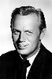

Country:United States, 113 minutes
Spoken languages:
Genres:Thriller, Horror, Mystery, Drama, Action
Director(s):Michael Crichton
Writer(s):Michael Crichton, Robin Cook
Video Codec:Unknown
Number: 1880


Certification:PG
Storyline:
A young female doctor discovers something sinister going on in her hospital. Relatively healthy patients are having 'complications' during simple operations and ending up in comas. The patients are then shipped off to an institute that looks after them. The young doctor suspects there is more to this than meets the eye.
Cast: 


Medium: Original DVD,
Comments: Part of: 4 Film Favorites - Horror
Loaned: No
Aspect ratio: Unknown